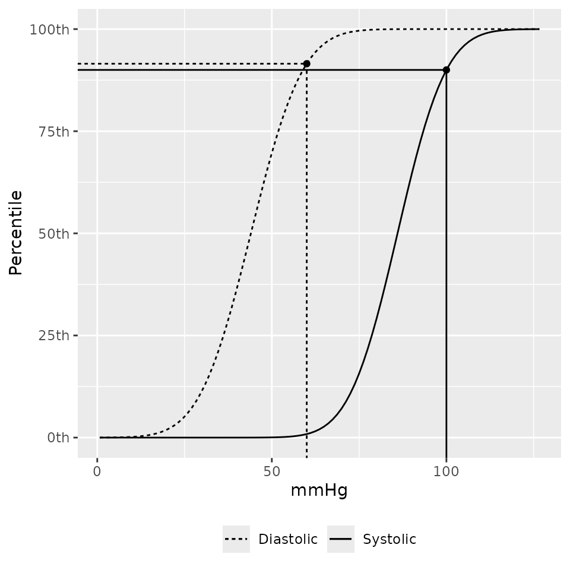

Overview of Pediatric Blood Pressure Distributions
Source:vignettes/bp-distributions.Rmd
bp-distributions.RmdIntroduction
Part of the work of Martin et al. (2022) required transforming blood pressure measurement into percentiles based on published norms. This work was complicated by the fact that data for pediatric blood pressure percentiles is sparse and generally only applicable to children at least one year of age and requires height, a commonly unavailable data point in electronic health records for a variety of reasons.
A solution to building pediatric blood pressure percentiles was developed and is presented here for others to use. Inputs for the developed method are:
- Patient sex (male/female) required
- Systolic blood pressure (mmHg) required
- Diastolic blood pressure (mmHg) required
- Patient height (cm) if known.
Given the inputs, the following logic is used to determine which data sets will be used to inform the blood pressure percentiles. Under one year of age, the data from Gemelli et al. (1990) will be used; a height input is not required for this patient subset. For those at least one year of age with a known height, data from Expert Panel on Integrated Guidelines for Cardiovascular Health and Risk Reduction in Children and Adolescents (2011) (hereafter referred to as ‘NHLBI/CDC’ as the report incorporates recommendations and inputs from the National Heart, Lung, and Blood Institute [NHLBI] and the Centers for Disease Control and Prevention [CDC]). If height is unknown and age is at least three years, then data from Lo et al. (2013) is used. Lastly, for children between one and three years of age with unknown height, blood pressure percentiles are estimated by the NHLBI/CDC data using as a default the median height for each patient’s sex and age.

With version 2.0.0 and later, the option to select the specific reference source data was introduced along with the additional Flynn et al. (2017) reference.
The sources are:
- Gemelli et al. (1990) for kids under one year of age.
- Lo et al. (2013) for kids over three years of age and when height is unknown.
- Expert Panel on Integrated Guidelines for Cardiovascular Health and Risk Reduction in Children and Adolescents (2011) for kids 1 through 18 years of age with known stature.
- Flynn et al. (2017) for kids 1 through 18 years of age with known stature.
The data from Flynn et al. (2017) and Expert Panel on Integrated Guidelines for Cardiovascular Health and Risk Reduction in Children and Adolescents (2011) are similar but for one major difference. Flynn et al. (2017) excluded overweight and obese ( BMI above the 85th percentile) children and Expert Panel on Integrated Guidelines for Cardiovascular Health and Risk Reduction in Children and Adolescents (2011) included overweight and obese children.
Estimating Pediatric Blood Pressure Distributions
There are two functions provided for working with blood pressure distributions. These methods use Gaussian distributions for both systolic and diastolic blood pressures with means and standard deviations either explicitly provided in an aforementioned source or derived by optimizing the parameters such that the sum of squared errors between the provided quantiles from an aforementioned source and the distribution quantiles is minimized. The provided functions, a distribution function and a quantile function, follow a similar naming convention to the distribution functions found in the stats library in R.
Percentiles
What percentile for systolic and diastolic blood pressure is 100/60 for a 44 month old male with unknown height?
p_bp(q_sbp = 100, q_dbp = 60, age = 44, male = 1)
## $sbp_p
## [1] 0.7700861
##
## $dbp_p
## [1] 0.72739Using the default source of martin2022 the data source
for the above is Lo et al. (2013) since
height was not specified. The same result could be found by explicitly
using the lo2013 source.
p_bp(q_sbp = 100, q_dbp = 60, age = 44, male = 1, source = "lo2013")
## $sbp_p
## [1] 0.7700861
##
## $dbp_p
## [1] 0.72739Those percentiles would be modified if height was 103 cm:
p_bp(q_sbp = 100, q_dbp = 60, age = 44, male = 1, height = 103)
## $sbp_p
## [1] 0.9000536
##
## $dbp_p
## [1] 0.9152593
p_bp(q_sbp = 100, q_dbp = 60, age = 44, male = 1, height = 103, source = "nhlbi")
## $sbp_p
## [1] 0.9000536
##
## $dbp_p
## [1] 0.9152593If you don’t have the height, but you do have the height percentiles you can use that instead:
p_height_for_age(103, male = 1, age = 44)
## [1] 0.795653
x <- p_bp(q_sbp = 100, q_dbp = 60, age = 44, male = 1, height_percentile = 0.80, source = "nhlbi")
x
## $sbp_p
## [1] 0.9000536
##
## $dbp_p
## [1] 0.9152593A plotting method to show where the observed blood pressures are on the distribution function is also provided.
bp_cdf(sbp = 100, dbp = 60, age = 44, male = 1, height_percentile = 0.80, source = "nhlbi")
Vectors of blood pressures can be used as well. NA
values will return NA.
bps <-
p_bp(
q_sbp = c(100, NA, 90)
, q_dbp = c(60, 82, 48)
, age = 44
, male = 1
)
bps
## $sbp_p
## [1] 0.7700861 NA 0.3639854
##
## $dbp_p
## [1] 0.7273900 0.9995515 0.1903674If you want to know which data source was used in computing each of
the percentile estimates you can look at the bp_params
attribute:
attr(bps, "bp_params")
## source male age sbp_mean sbp_sd dbp_mean dbp_sd height_percentile
## 1 lo2013 1 36 93.2 9.2 55.1 8.1 NA
## 2 lo2013 1 36 93.2 9.2 55.1 8.1 NA
## 3 lo2013 1 36 93.2 9.2 55.1 8.1 NA
str(bps)
## List of 2
## $ sbp_p: num [1:3] 0.77 NA 0.364
## $ dbp_p: num [1:3] 0.727 1 0.19
## - attr(*, "bp_params")='data.frame': 3 obs. of 8 variables:
## ..$ source : chr [1:3] "lo2013" "lo2013" "lo2013"
## ..$ male : int [1:3] 1 1 1
## ..$ age : num [1:3] 36 36 36
## ..$ sbp_mean : num [1:3] 93.2 93.2 93.2
## ..$ sbp_sd : num [1:3] 9.2 9.2 9.2
## ..$ dbp_mean : num [1:3] 55.1 55.1 55.1
## ..$ dbp_sd : num [1:3] 8.1 8.1 8.1
## ..$ height_percentile: num [1:3] NA NA NA
## - attr(*, "class")= chr [1:2] "pedbp_bp" "pedbp_p_bp"Quantiles
If you have a percentile value and want to know the associated systolic and diastolic blood pressures:
Working With More Than One Patient
The p_bp and q_bp methods are designed
accept vectors for each of the arguments. These methods expected each
argument to be length 1 or all the same length.
eg_data <- read.csv(system.file("example_data", "for_batch.csv", package = "pedbp"))
eg_data
## pid age_months male height..cm. sbp..mmHg. dbp..mmHg.
## 1 patient_A 96 1 NA 102 58
## 2 patient_B 144 0 153 113 NA
## 3 patient_C 4 0 62 82 43
## 4 patient_D_1 41 1 NA 96 62
## 5 patient_D_2 41 1 101 96 62
bp_percentiles <-
p_bp(
q_sbp = eg_data$sbp..mmHg.
, q_dbp = eg_data$dbp..mmHg.
, age = eg_data$age
, male = eg_data$male
, height = eg_data$height
)
bp_percentiles
## $sbp_p
## [1] 0.5533069 0.8480961 0.2622697 0.6195685 0.8200583
##
## $dbp_p
## [1] 0.4120704 NA 0.1356661 0.8028518 0.9389043
str(bp_percentiles)
## List of 2
## $ sbp_p: num [1:5] 0.553 0.848 0.262 0.62 0.82
## $ dbp_p: num [1:5] 0.412 NA 0.136 0.803 0.939
## - attr(*, "bp_params")='data.frame': 5 obs. of 8 variables:
## ..$ source : chr [1:5] "lo2013" "nhlbi" "gemelli1990" "lo2013" ...
## ..$ male : int [1:5] 1 0 0 1 1
## ..$ age : num [1:5] 96 144 3 36 36
## ..$ sbp_mean : num [1:5] 100.7 102 89 93.2 86
## ..$ sbp_sd : num [1:5] 9.7 10.7 11 9.2 10.9
## ..$ dbp_mean : num [1:5] 59.8 61 54 55.1 44
## ..$ dbp_sd : num [1:5] 8.1 10.9 10 8.1 11.6
## ..$ height_percentile: num [1:5] NA 5 NA NA 5
## - attr(*, "class")= chr [1:2] "pedbp_bp" "pedbp_p_bp"Going from percentiles back to quantiles:
q_bp(
p_sbp = bp_percentiles$sbp_p
, p_dbp = bp_percentiles$dbp_p
, age = eg_data$age
, male = eg_data$male
, height = eg_data$height
)
## $sbp
## [1] 102 113 82 96 96
##
## $dbp
## [1] 58 NA 43 62 62Blood Pressure Charts
Percentiles over age:
bp_chart()The percentiles curves for a males in the 75th height percentile based on the Flynn et al. (2017) data:
bp_chart(male = 1, height_percentile = 75, source = "flynn2017")